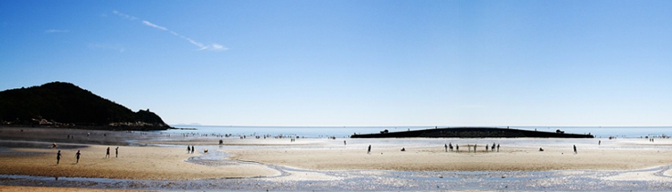
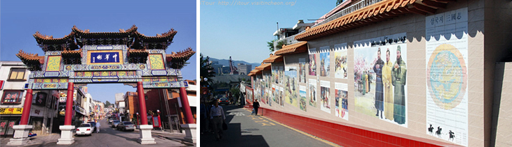
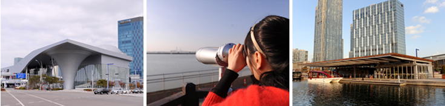

The natural scenery is spectacular with a luxuriant pine forest and fantastic rocks and stones encompassing the beach. Of particular note, sunset on Eurwangni Beach is known as one of the most beautiful spectacles on the West Coast of Korea. The sands of the beach form a crescent shape. On the beach, you can see many kinds of water birds. On both ends of the beach stand pine trees and wonderful rocks that create a wonderful vista where families can enjoy a great time.
Chinatown
Bukseongdong1-ga, Jung-gu, Incheon

The natural scenery is spectacular with a luxuriant pine forest and fantastic rocks and stones encompassing the beach. Of particular note, sunset on Eurwangni Beach is known as one of the most beautiful spectacles on the West Coast of Korea. The sands of the beach form a crescent shape. On the beach, you can see many kinds of water birds. On both ends of the beach stand pine trees and wonderful rocks that create a wonderful vista where families can enjoy a great time.
Songdo ‘Mireagil’
93 Songdo-dong, Yeonsu-Gu, Incheon, Korea

So called 'Songdo Mireagil’ (one of the main roads) starting from 'Tomorrow city' (a transit center in Songdo) is 7km long and takes about 3 hours to walk through to 'Popcorn City', which is placed at the end of the road. On the way, there are some of the landmarks in Songdo such as 'Compact Smart City', 'Tri-bowl', Incheon bridge memorial hall, 'Canal Walk', 'Songdo Central Park' and 'Songdo Convensia'. 'Tri-bowl' located in the Central Park, is a unique architecture. It stands for the sky, the sea and the earth and has been awarded the first prize of Korean architecture awards 2010. A beautiful lake inside the park is a man made, salt water lake. It's running environmental-friendly, using double purified filters. 'Canal walk' is an European style shopping area, where you can walk and shop along the canal. 'Songdo Convensia' is an international exhibit center where lots of events are held all year around. 'Popcorn City' is a venue in which a variety of cultural and art events take place.